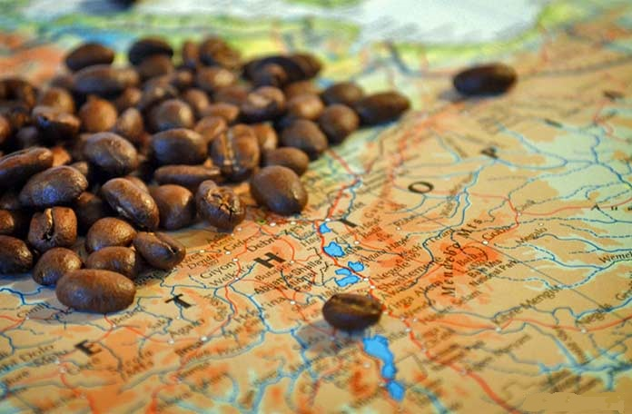
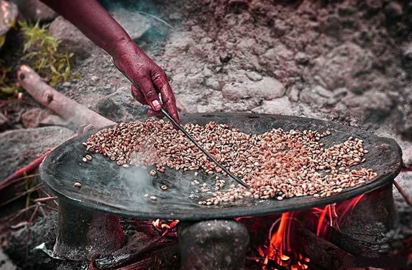

Как родина кофе, Эфиопия является настоящей отправной точкой для истинных кофеманов. Согласитесь, вы бы не начали мировой тур по лучшим пиццериям с Португалии или искать истоки приготовления борща в Швеции.
Согласно одной из эфиопских легенд о возникновении кофе, первый кофе нашёл обыкновенный пастух, который заметил, что его козы становятся невероятно бодры, просто съев небольшие ягодки, похожие на вишню, с соседнего дерева. Пастух взял несколько «вишенок» и принёс их в монастырь, рассказав священнослужителю о стимулирующем воздействии ягод. Тот, недолго думая, бросил их в огонь, чтобы поскорее уничтожить. Но, как только из огня повеял незабываемый аромат обжаренного кофе, никто не смог устоять.
Эти кофейные вишни не что иное, как арабика. Это сорт кофе, из которого сегодня производится около 75% кофейных продуктов по всему миру.
